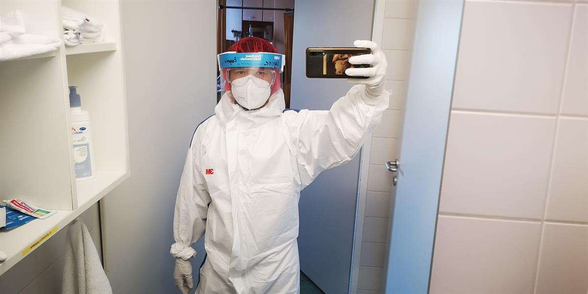

‘It didn’t kill me, but I came out stronger’
Eugene, a 32-year old nurse, left the elderly care home early on 1 April eager to spend time with his wife and five-month old son at their newly built house just outside of Vienna.But on the way home, he felt something was not right.He began to feel fatigue, his throat scratchy, and that nagging feeling that he could have contracted COVID-19 at his workplace.
'I could only think of two things: if I have it, how to keep from infecting my wife and little boy; and infecting all these other people in the train,' his anxiety sank in more deeply as he began putting the pieces together.'At that time, our care facility did not have enough personal protective equipment and there was a lack of disinfectant.My colleagues and I had to create our own masks out of gauze bandages, while more and more patients were testing positive each day.'He knew the risk was high.
'I could not stomach the thought of infecting my wife and son,' he says.Reaching home, he set up a tent out in their garden, and slept there to isolate himself.It was not an easy few days as spring had only started, and temperature dropped at night.So did the symptoms setting in: dry and rough coughing, a 39˚ fever, his whole body aching, and chills despite wrapping himself in layers of sheets.
After a visit from the Austrian health services for testing, his diagnosis was confirmed.'I felt chills down my spine – will I die?What will happen to my family?Will I survive this?'he recalls, describing how the symptoms got worse, like his lungs were being attacked.He could not breathe, his fever was fluctuating, and he lost his sense of smell and taste.
As the spring temperature kept dropping he mustered the energy to set up camp inside: he sealed off half of the house to keep his family away.At night he slept in the toilet because it has heated flooring.'I didn’t care.Besides, I already lost my sense of smell.If I slept in the hallway my coughing would wake my son, and I did not want to take the slightest chance of infecting my wife – who took it very hard.'
His head nurse and the Austrian health services advised him to stay at home.As a mild case and owing to his young age, he could not be accommodated at any hospital.For over a week he treated his cough with expectorant and his fever with paracetamol, and doubled up on liquids; as a nurse he was applying to himself the same care he would dedicate to his patients.He made regular trips to the garden to get some fresh air and sunlight, a luxury he said he never thought he had.
'I thought of how many others who are cramped in small spaces, and how difficult it must be for poorer families who live in slums in other parts of the world to even maintain any sort of physical distance,' he says.Most importantly, he stayed in contact with friends and talked about sports, having beer, and travelling; and did regular video-chats with his wife and son – who were just in the next room.'So near yet so far,' he now muses.
He used his isolation to read up on managing the disease, guidance on how not to infect other people, updates on vaccines and drugs trials for COVID-19, and inspirational stories of recovery.It was at this time that he started looking at life differently.'When you’re left alone to battle a disease that has yet no cure and no one really knows how to handle, not knowing if you live or die, while thinking of who will take care of your family or if you will ever get back to work again, you’re on survival mode.If I survive this, I will make it up – to my patients, my colleagues, and my family,' he recalls telling himself.
On 23 April he felt the symptoms wane, and two days later his official isolation period ended.Because testing at that time was prioritised only for the severe cases and older patients, he was advised to monitor the gradual disappearance of his symptoms.He also decided to extend his isolation to another week just to be sure – despite his utter eagerness to hold his wife and hug his son again.
Now he is back at work, ready to pick up where he left off.His care facility has also acquired more than enough PPEs and disinfectants for the staff and the patients.He comes back ready with a story to tell them, and reassure his patients that COVID-19 is not necessarily a death sentence, that only very few die from it.'It did not kill me, and instead it has made me more resolute and compassionate,' he says.
His road to recovery was rough, but he says it’s not as bad as many others he has witnessed at work or read about on the internet.As a health care worker he still had fears of being infectious while travelling to work, caring for his patients, or as he reunites with his wife and son.He also admits guilt for missing work for a month: 'How could we be called heroes if I was not even able to care for my patients, and my team severely understaffed?How can I be proud of my work as a frontliner, if I’m sulked here at home?'
But now he uses his experience to lift the spirits of his patients, colleagues, and some friends who also contracted COVID-19.'I want to show that I’m there for them – even if it’s just a few minutes of relief for them.I want to remind people we can all fight this if we stay at home, stick to the facts, and still be connected while we’re physically distanced.It’s a small sacrifice compared to what the disease does to those who experienced it, and this way we can still be united in solidarity,' he says.
COVID-19 may have given him the scare of his life, but it has also built him stronger.Like over a million survivors across the world, Eugene is one with the story to tell, and the heart for it. '
When the antibody tests can be proven really effective by the World Heath Organization, or governments, or private companies…I will be one of the first to volunteer to share my antibodies and try to save even just one life,' he smiles.
Now that’s a frontliner.
Posted On: 2020-06-03T00:00:00

Content Date: 2020-06-03
Download Date: 2021-05-30
Document ID: L0C04CPRC